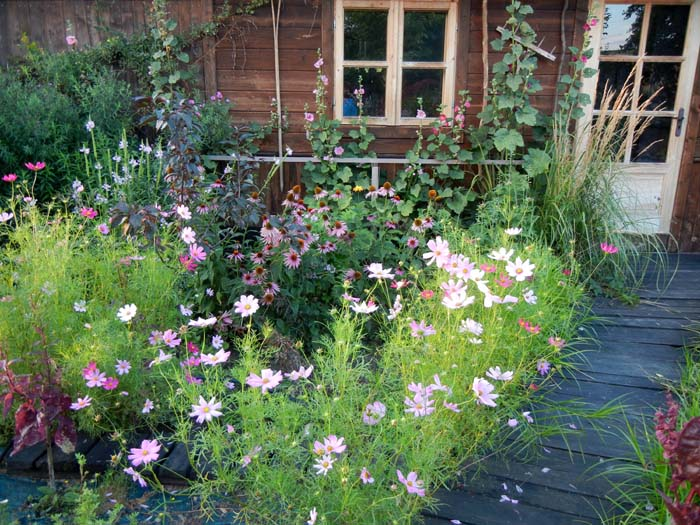
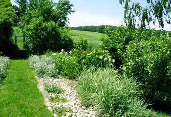
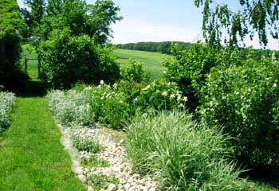
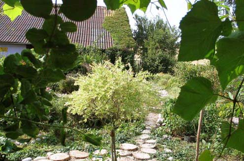

W końcu wpadłam na pomysł, by zrobić dróżki z wąskich, impregnowanych olejem, deseczek. Efekt znów zachwycał, ale drewno szybko próchniało, trzeba je było często wymieniać i kilka razy w roku malować. Mimo tego podobały mi się w ogrodzie najbardziej.

Kiedy nastał w Moczydle Mikołaj, postanowił zmienić wygląd ścieżek. Podjął trud ułożenia ich z płaskich kamieni i obsypania żwirkiem. Część traktów ułożył ze starych cegieł, gdzieniegdzie poprzeplatanych otoczakami. Ogród wypiękniał.

Scieżki w ogrodzie to krwioobieg. Wiele od nich zależy, bo nawet najładniejsza kompozycja ogrodowa może stracić na urodzie, jeśli dochodzimy do niej byle jakim traktem.
Moje pierwsze ścieżki to była ogrodowa katastrofa. Wytyczałam je przy użyciu polnych kamieni i miałam nadzieję, że zarosną ładną trawą. Niestety, trawa rosła kiepsko i ścieżka straszyła łysinami.


Kolejnym etapem było przetykanie trawy płaskimi kamieniami. Ładnie wyglądało, ale dość szybko kamienie wrosły w ziemię i z czasem nie było po nich śladu.


Kolejnym etapem było przetykanie trawy płaskimi kamieniami. Ładnie wyglądało, ale dość szybko kamienie wrosły w ziemię i z czasem nie było po nich śladu.
Dobrym pomysłem okazały się też ścieżki wysypane zrębkami uzyskanymi z pociętych rozdrabniarką gałęzi. Są jednoroczne, ale po rozłożeniu wędrują pod rośliny jako nawóz, a na ich miejsce wsypuję nowe. Tym sposobem pozbywam się też nadmiaru gałęzi.
W 2007 roku instalowałam w gospodarstwie ekologiczną oczyszczalnię. Po inwestycji zostało sporo drobnych kamieni, jakie ochoczo wykorzystałam do zasypania agrotkaniny przeznaczonej pod nowe ścieżki.
Byłam zachwycona efektem. Wszystko lsniło, kamienie zdawały się błyszczeć w słońcu, a ogród stał się dostojny i nowoczesny.
Ale i ten pomysł okazał się niepraktyczny, bo kamienie bardzo szybko pociemniały i zarosły chwastami. Ani tego kosić ani plewić. Byłam zrozpaczona.
Podjęłam jeszcze kila rozpaczliwych prób robienia ścieżek z mieszanych materiałów: drewna, kamieni, cegieł. Efekt był wspaniały, ale - jak poprzednie pomysły - krótkotrwały. Drewno zgniło, a kamienie i cegły zarosły chwastami.
